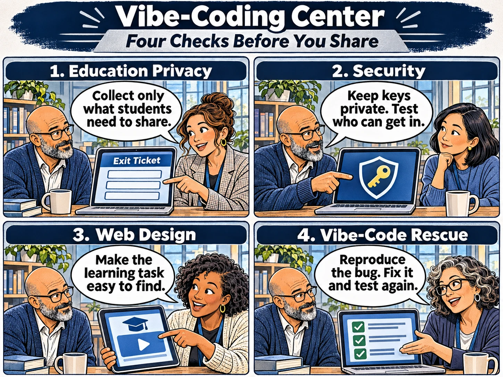
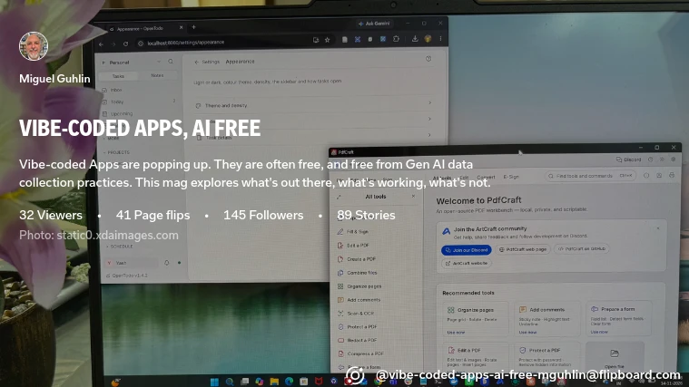

An educator’s field guide to building with AI
Your classroom idea.
A more thoughtful website.
Turn an idea into a useful learning tool—with a design that fits, safer code, and student privacy in mind.

Choose the help you need
First time? Start hereRead an educator-friendly introduction, then take the full Markdown instruction file into your project. Markdown is a plain-text format your coding assistant can read.
Reusable skills
Browse the skill libraryA skill gives your AI assistant a repeatable workflow. Choose learning, writing, evidence, and app-development workflows—then use a project prompt to turn the instructions into a useful tool.
Explore 25 skills and project ideas
Go App Builder: desktop, Android, and browser · Download the complete Go skill
Take the whole workbench
One download.
Room to keep building.
The complete VCC bundle contains this static website and every local component needed to use or host it. Unzip it and start with README.md.
Inside the bundle
- Four featured Markdown guides: Web Design, Security, Education Privacy, and Vibe-Code Rescue
- 29 agent-ready skills with setup and use prompts
- Readable guides and educator introductions
- The SecureVCC reference and provenance files
- Project brief, prompt pack, and launch record
- 25 reusable skills, project prompts, concept sketches, and hero artwork
- AGENTS.md and CLAUDE.md pointer examples
- Hero art and both supplied visual explainers
- Resource review, site source, and rebuild scripts
Stay up to date
Follow Miguel Guhlin’s Vibe-Coded Apps ezine for vibe-coded apps, AI tools, and free resources. Open the ezine and choose Follow on Flipboard to subscribe to new additions.
